仙途 · 竖屏 UI 设计册 V4仙途 · 全套竖屏 UI 效果稿
V4 / 17 个主页面 + 4 类弹窗 / 整套待确认
当前阶段：UI 美术设计。确认整套构图与功能布局后，再制作背景、图标、按钮等独立资源，最后接入游戏。点击任意页面查看原图。
手机采用 9:16 构图，设计坐标基准 1080 × 1920；原图实际尺寸见页面下方。PC 保持竖屏主体比例，左右延展场景，不拉伸控件或移动主要操作区。
画面中的数值、奖励、解锁状态为设计示例，尚未连接业务。最终中文文本使用 Unity 文字组件，避免图片中文字与实际状态不一致。

01 · 登录
941 × 1672 · 待确认
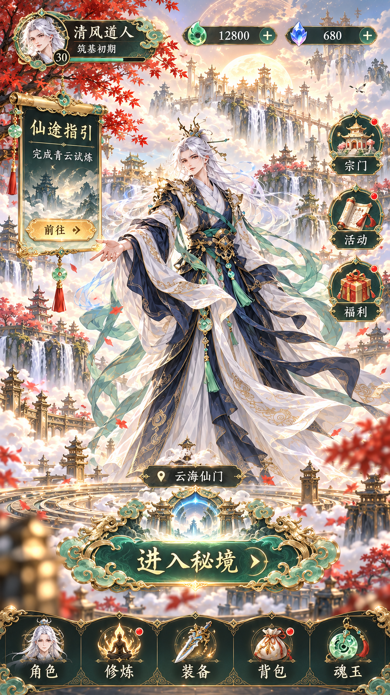
02 · 大厅
941 × 1672 · 待确认

03 · 角色
941 × 1672 · 待确认
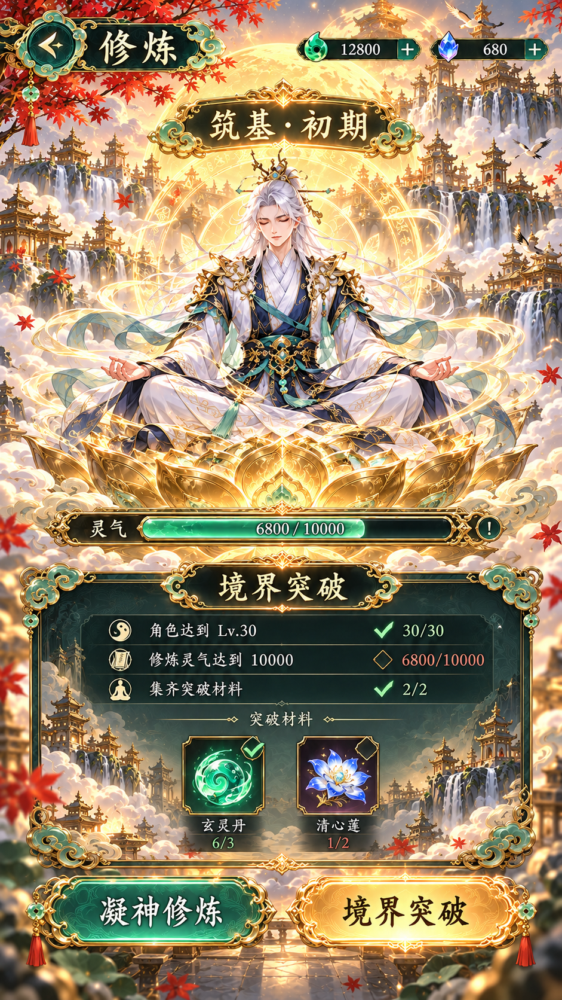
04 · 修炼
941 × 1672 · 待确认

05 · 装备
941 × 1672 · 待确认
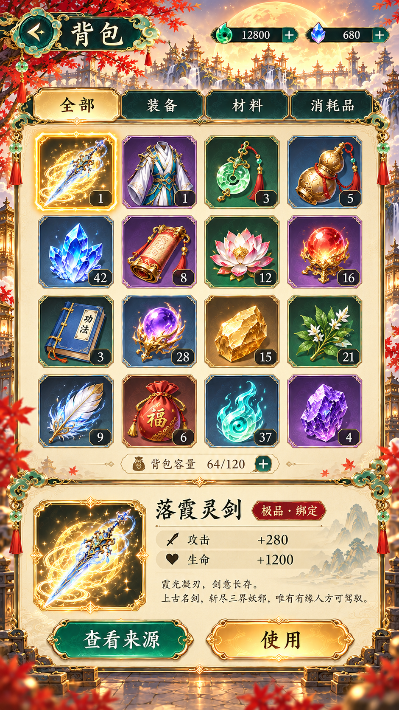
06 · 背包
941 × 1672 · 待确认

07 · 魂玉
940 × 1672 · 待确认

08 · 天赋
941 × 1672 · 待确认

09 · 战斗
941 × 1672 · 待确认
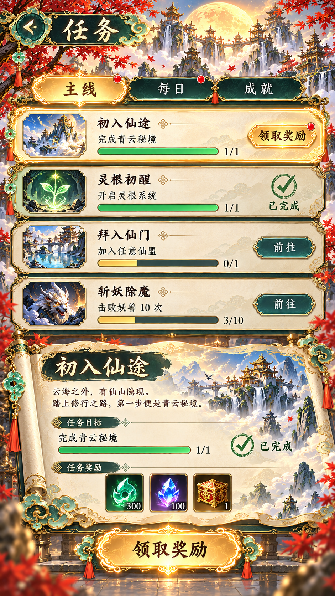
10 · 任务
941 × 1672 · 待确认
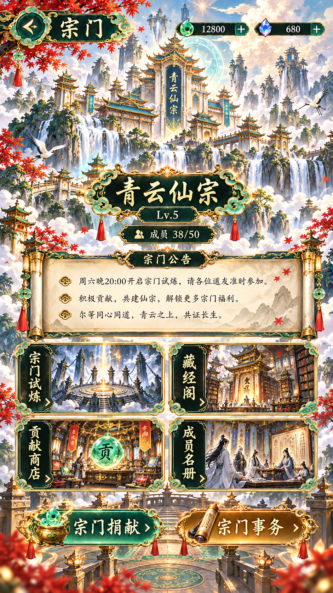
11 · 宗门
941 × 1672 · 待确认
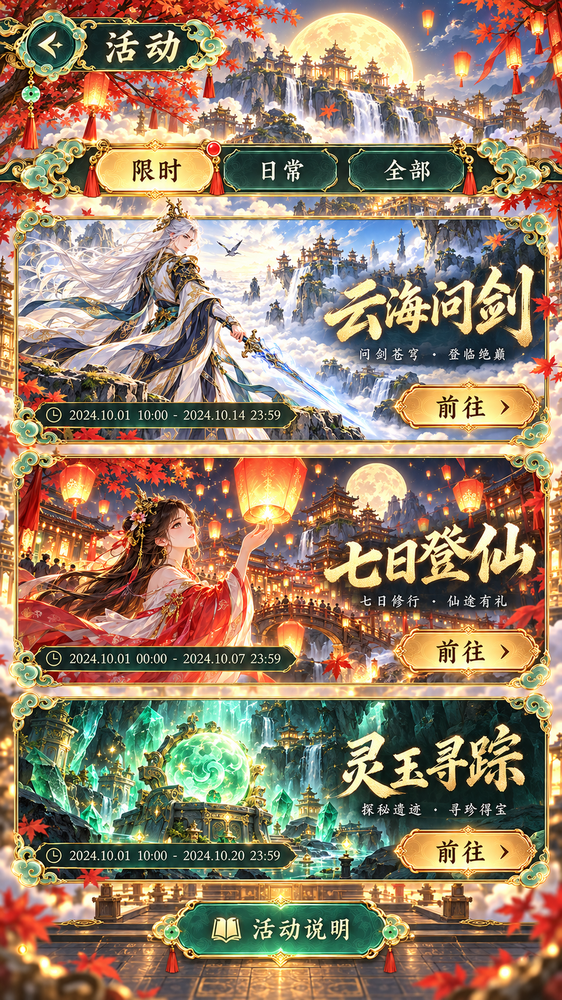
12 · 活动
941 × 1672 · 待确认
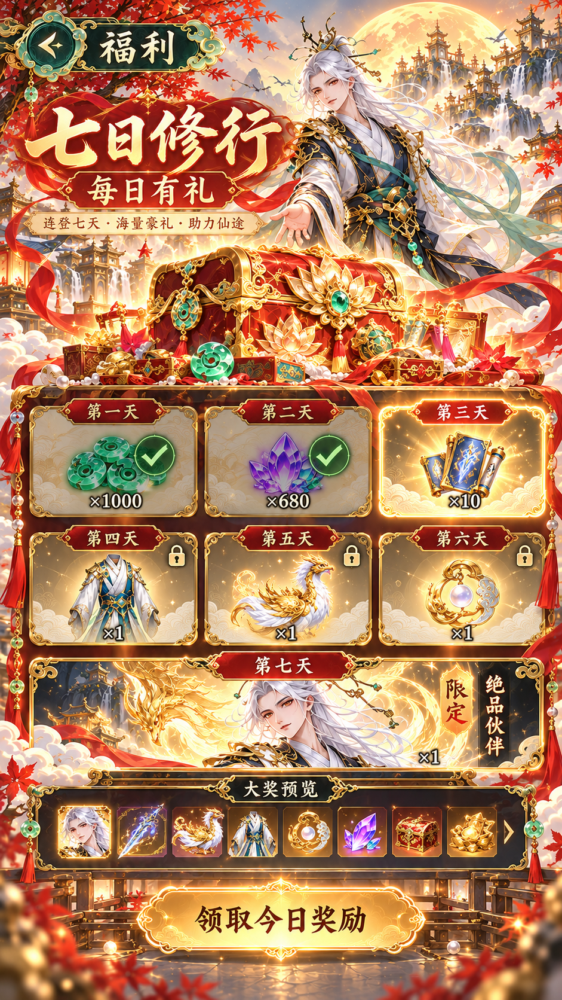
13 · 福利
941 × 1672 · 待确认
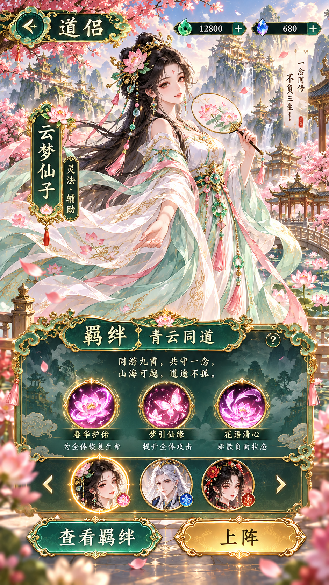
14 · 仙侣
941 × 1672 · 待确认
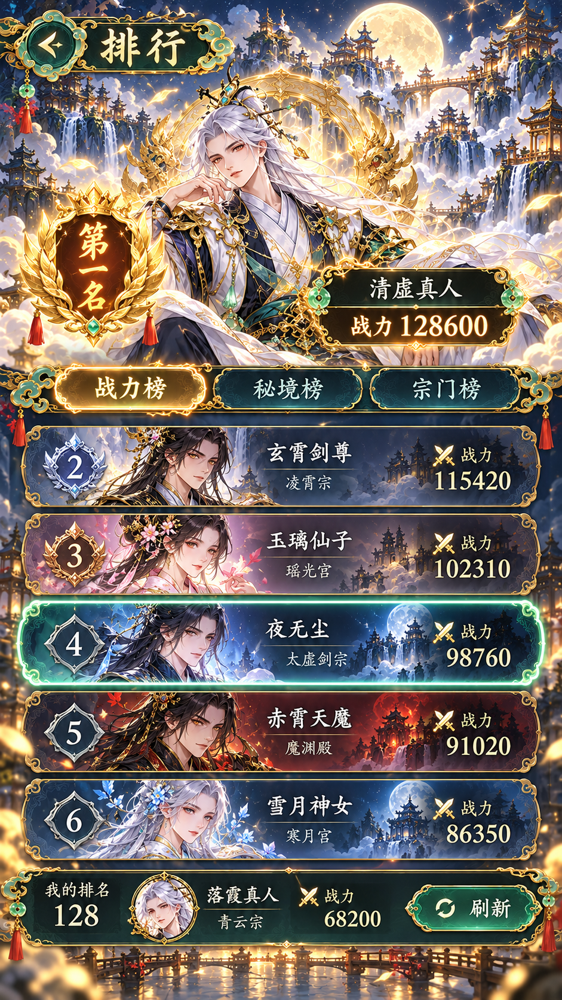
15 · 排行榜
941 × 1672 · 待确认
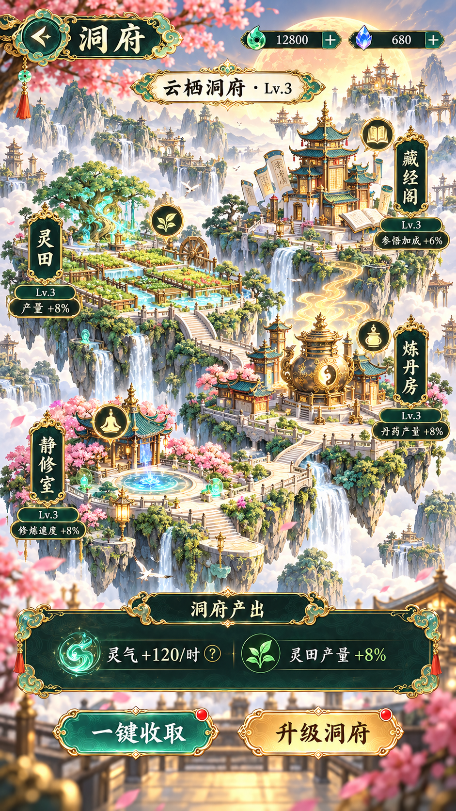
16 · 洞府
941 × 1672 · 待确认
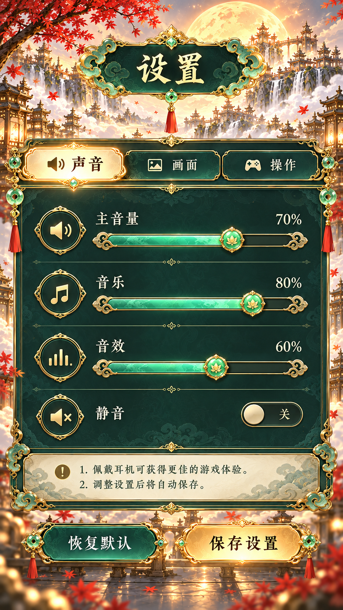
17 · 设置
941 × 1672 · 待确认

18 · 服务器选择
941 × 1672 · 待确认

19 · 注册
941 × 1672 · 待确认

20 · 战斗结算
941 × 1672 · 待确认
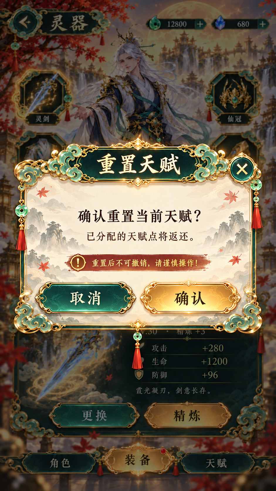
21 · 确认弹窗
941 × 1672 · 待确认